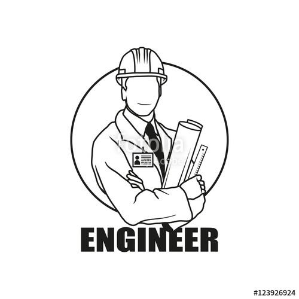

Professional Experience
Automation Engineer, January 2018- now
After graduation, I got my first job as an Automation Engineer in Delhi. For first few days my work was to observe people what they are doing and learn by yourself how to do that.In about 15 days I was assigned a project to design the working conditions of a "GLASS FURNACE FACTORY".One of my first memories of being a kid was,'I want to have a real job when I grow up.'And to me that meant you wear a suit and a hat and carry a briefcase and go to your job.In reality my wish got shattered, as an Engineer never goes to work like that.one of the most important aspect of job I've learned is to choose a job which you love as someone has correctly said" Choose a job you LOVE you will never have to work a day in your LIFE."
As of now I've fallen in love with web development and it's gonna be a life long relationship.